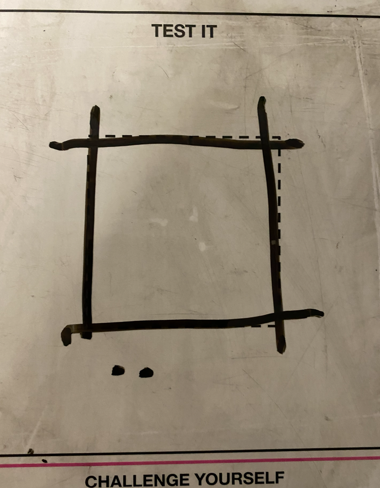

Building off of my Project 6: Simple Car, I attached a drawing tool to the robot so it could trace a precise square on the back of a placemat or another sheet of paper. The goal was to design and program a robot that could draw a nearly perfect square while keeping the path accurately placed within the required outer boundary and outside the inner square.
The challenge was to use the Simple Car base and improve the motion control enough to create a clean, repeatable square pattern. This required careful attention to turning angles, wheel movement, and the placement of the marker so the drawing stayed in the right area.

The video shows a class run first, followed by a home run of my project.